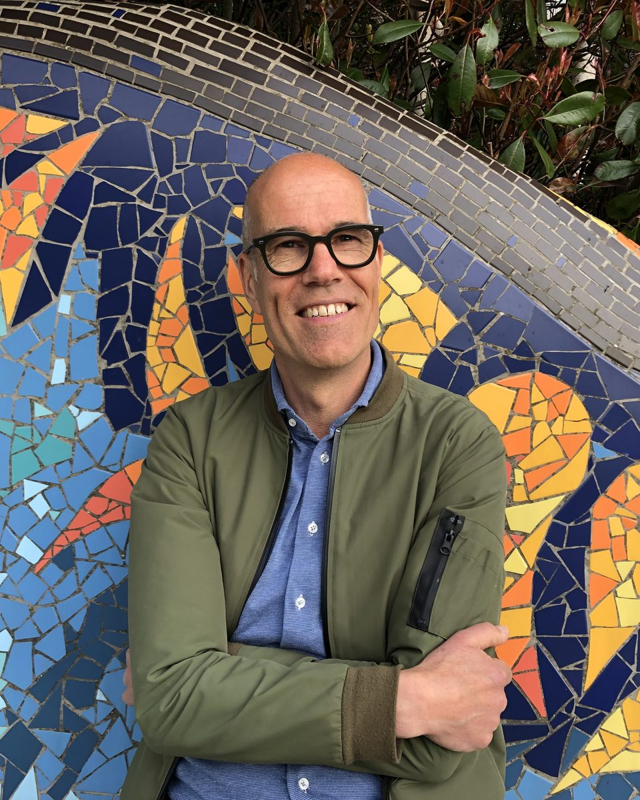

Over mij
Ik ben Walter Montenarie. Ik heb ruim 30 jaar ervaring op het snijvlak van gezondheidscoaching, commercieel management, organisatieontwikkeling en strategie.
De afgelopen zes jaar werkte ik bij het Health Coach Program als zakelijk directeur, gezondheidscoach en senior strategisch adviseur. Daar zette ik wetenschappelijk onderbouwde gezondheidsprogramma's op en implementeerde die bij grote bedrijven en overheidsorganisaties.
Daarvoor had ik commerciële eindverantwoordelijkheid bij onder meer EDIA en Noordhoff en werkte ik als leidinggevende bij Sdu en Springer Nature. Zo leerde ik verschillende typen organisaties van binnenuit kennen.
Waarom dit werk
In 2010 kreeg ik zelf een burn-out. Tijdens mijn herstel ontdekte ik hoe belangrijk de balans is tussen mentale veerkracht en fysieke gezondheid. Sindsdien help ik anderen om gezonder en met meer plezier te leven en te werken.
Ik liet me opleiden tot HCP-gezondheidscoach. Daardoor kan ik de wetenschap van leefstijlgeneeskunde vertalen naar wat werkt in de praktijk.
Hoe ik werk
Ik begin bij de vraag wat het jullie organisatie moet opleveren. Daarna kijk ik naar wat er al gebeurt, wat ontbreekt en wat haalbaar is. Ik werk vanuit Den Haag voor (internationale) organisaties in heel Nederland.